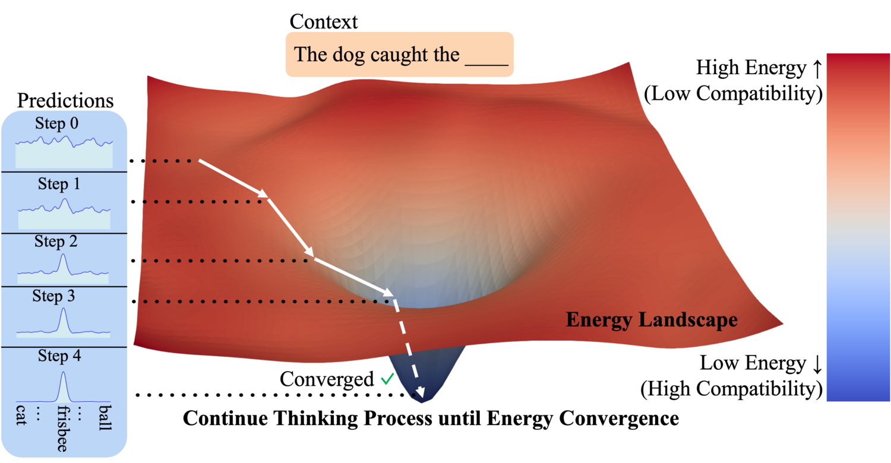
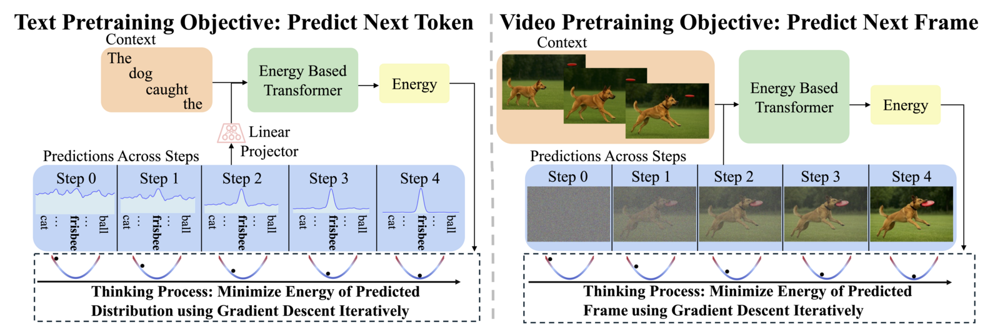
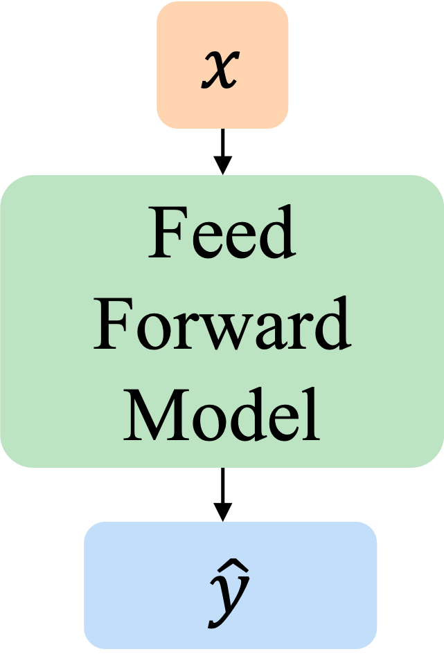
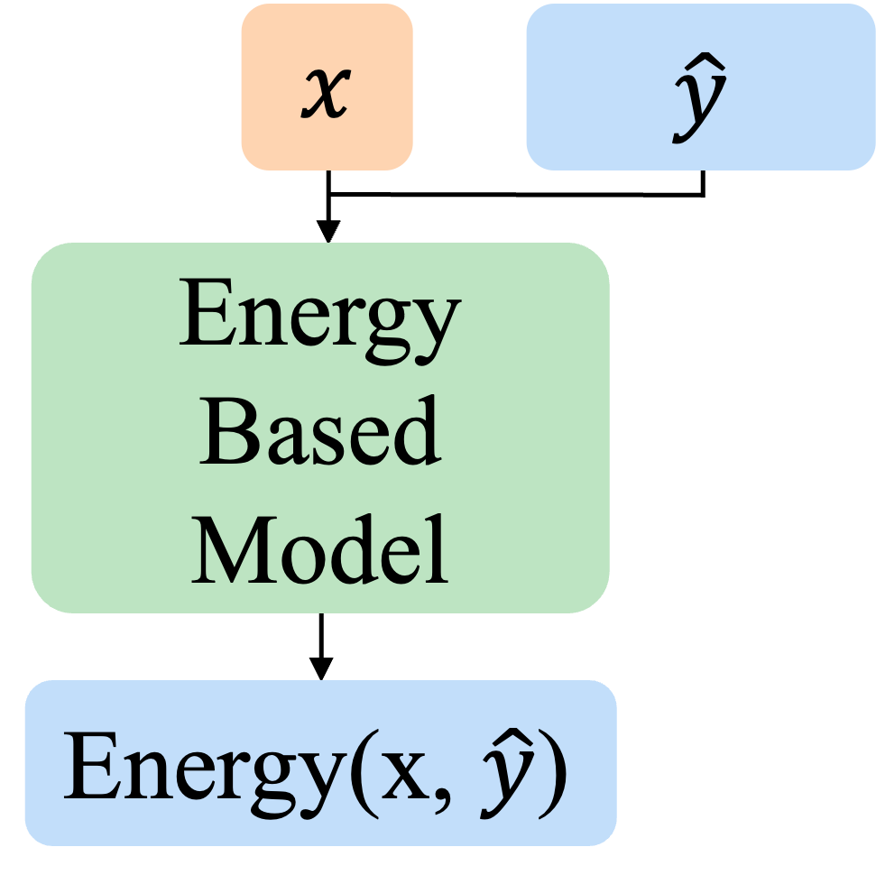
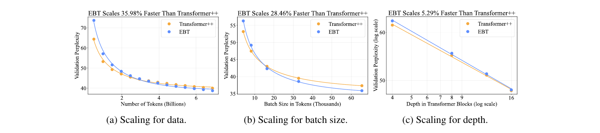
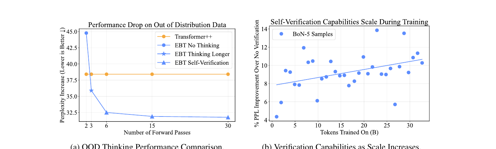
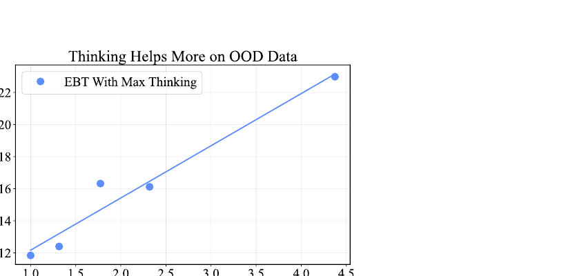
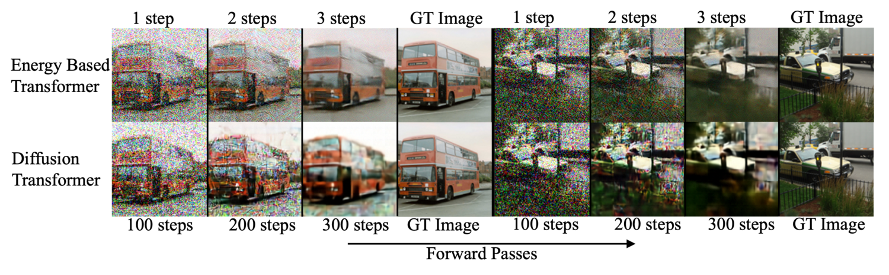

An interactive explainer
Energy-Based Transformers are Scalable Learners and Thinkers
Today's "reasoning models" learn to think slowly only where an answer can be checked by a rule — math, code — and only because someone built the checker. This paper asks a sharper question: can a model learn to think entirely from unsupervised next-token prediction, on any problem, in any modality? The answer is yes, and the trick is disarmingly simple. Instead of generating a prediction in one shot, an Energy-Based Transformer learns to score how well a candidate prediction fits the context, then thinks by rolling that candidate downhill on the learned score until it converges. Doing this lets them out-scale the standard Transformer++ recipe by up to 35% during pretraining, squeeze 29% more out of extra inference compute where a vanilla Transformer gets nothing, and beat a Diffusion Transformer at image denoising while using 99% fewer forward passes.

For the last two years, "thinking" in AI has meant one specific thing: a chatbot that produces a long chain of reasoning before answering, trained with reinforcement learning against a reward. It works beautifully — on math and code. The catch is that the recipe needs a verifier: a rule that can check whether the final answer is right. That exists for arithmetic and unit tests. It does not exist for "is this a good paragraph?" or "what does the next frame of this video look like?" So the most exciting capability in modern AI is, today, fenced into a small corner of problems.
The same limitation shows up everywhere you look. Diffusion models can spend more compute by taking more denoising steps — but they typically can't benefit beyond the step count they were trained on, and they need an external verifier to do anything smarter. Recurrent networks loop, but most only update their state with new input; they have no mechanism to deliberate on a single decision. Across the board, a feed-forward Transformer spends exactly the same amount of compute on the easiest token and the hardest one.
This paper takes the question seriously — can thinking emerge from plain unsupervised learning, with no external verifier, on any modality? — and answers it by building the verifier into the model itself. Below we'll build up the idea from scratch, and you'll get to roll predictions downhill on a real energy landscape, run a best-of-N self-verification, and watch why a harder prediction produces a rougher landscape.
1. Two systems, one missing ability
Psychologists split human cognition into two modes. System 1 is fast, automatic, intuitive — recognizing a face, completing "peanut butter and ___." System 2 is slow, effortful, deliberate — planning a route, working through a proof, navigating a situation you've never seen before. Today's models are superb at System 1 and shaky at System 2, and the authors trace this to three concrete facets of deliberate thinking that standard architectures simply don't have.

Facet 1 — dynamic compute. Humans spend more effort on harder problems. Deciding what to eat for lunch is quick; deciding whether to change careers is not. A vanilla Transformer has a fixed depth, so per token it always does the same amount of work. Facet 2 — uncertainty. Before committing, humans weigh how sure they are. In continuous spaces like vision, standard models give no reliable confidence signal without bolt-on tricks. Facet 3 — verification. Good thinkers check their own work, which lets them stop early when they're confident or sample several options and keep the best. A feed-forward model has no built-in notion of "how good is this output?"
Diffusion Transformers get Facet 1 for free — more denoising steps is more compute — but they don't verify or estimate uncertainty. EBTs are designed to hit all three at once. The figure above shows how: a single model that, at every step, reads a candidate prediction and returns a scalar score, then improves the candidate by following that score's gradient.
2. Verification is easier than generation
The whole approach rests on one old, deep idea from complexity theory: checking a solution is usually far easier than producing one. Verifying that a path solves a maze is trivial; finding the path is the hard part. This asymmetry is the foundation of cryptography and of the P-versus-NP question, and it has a crucial consequence for learning — a verifier tends to generalize better than a generator. A model that learned to generate solutions to small mazes may flounder on big ones; a model that learned to check whether a path is valid transfers far more readily.


Energy-Based Models (EBMs) are built directly on this principle. Rather than learning a function that emits $\hat{y}$ from $x$, an EBM learns a compatibility function $\Etheta(x, \hat{y})$ — the energy — that scores how well any candidate $\hat{y}$ fits the context $x$. Low energy means high compatibility. Formally this defines an unnormalized probability,
$$ p_\theta(x, \hat{y}) \;\propto\; e^{-\Etheta(x, \hat{y})}, $$
where we deliberately drop the intractable normalizing constant. We never need the exact probability of a prediction — only which of two predictions is more compatible, and the relative energies tell us that directly. Crucially, the same network that scores a prediction is also what generates one: the generator is defined implicitly as gradient descent on the verifier. Verifier and generator are one model, which sidesteps the adversarial instability you get when a separate generator tries to fool a separate verifier.
3. The trick: thinking as energy minimization
Here is the move that makes everything work. If the model gives us a score $\Etheta(x, \hat{y})$ and is fully differentiable, then we can compute the gradient of that score with respect to the prediction itself, and walk the prediction downhill:
$$ \hat{y}_{i+1} \;=\; \hat{y}_i \;-\; \alpha \, \nabla_{\hat{y}_i} \Etheta(x, \hat{y}_i). $$
Start $\hat{y}_0$ as random noise. Feed $(x, \hat{y}_0)$ in, read the energy, take its gradient with respect to $\hat{y}_0$, step in the downhill direction, repeat. Each step is a forward-and-backward pass through the network; each step lowers the energy; the sequence of $\hat{y}_i$ is the model's train of thought for that one prediction. The step size $\alpha$ and the number of steps $N$ are the two knobs of thinking. This is the whole mechanism — and it's worth feeling it directly.
Notice the trade-offs you can already feel. Too small a step size and the prediction barely moves in $N$ steps; too large and it overshoots and oscillates. More steps means more thinking — and on this smooth bowl, more thinking always helps. That property — "more compute reliably buys more quality" — is exactly what feed-forward Transformers lack and what makes EBTs scale at inference.
4. Training a landscape you can roll down
How do you teach a network an energy landscape with a nice minimum at the right answer? Not by maximum likelihood — on real data the "true" region is a razor-thin manifold, and pushing energy to infinity off it makes the gradient (and therefore the thinking process) undefined. And not by the classic contrastive recipe of pushing up the energy of negative samples: in high dimensions there are exponentially many negatives, so it doesn't scale.
Instead, EBTs are trained by the optimization procedure itself. During training you run the same gradient-descent thinking loop, then compute an ordinary loss (cross-entropy for text, MSE for images) between the optimized prediction and the ground truth — and backpropagate through the entire loop. This implicitly carves the landscape so it slopes toward the true answer, making it locally convex around the data without ever touching the partition function.
# Training one EBT step (Algorithm 1)
y = randn_like(target) # start from noise
for i in range(N): # the thinking loop
energy = E_theta(x, y) # verifier: score the candidate
grad = d_energy / d_y # gradient w.r.t. the prediction
y = y - alpha * grad # generator: step downhill
loss = J(y, target) # cross-entropy / MSE to ground truth
loss.backward() # backprop THROUGH the whole loop
update(theta)Backpropagating through gradient steps needs second-order derivatives — gradients of gradients. That sounds frightening but isn't: it's done with Hessian-vector products that scale linearly with model size, so a single-step EBT costs only about 1.66× a vanilla forward pass. And because the backbone is a Transformer, it inherits the three properties EBMs historically lacked: parallelism, training stability, and scalability. That marriage — EBM objective, Transformer body — is what "Energy-Based Transformer" names.
Real landscapes don't smooth themselves out, though. The authors found three energy-landscape regularization techniques essential for good thinking: a replay buffer that simulates longer optimization trajectories so the region near the minimum is well-shaped; a dose of Langevin noise ($\hat{y}_{i+1} = \hat{y}_i - \alpha \nabla \Etheta + \eta_i,\; \eta_i \sim \mathcal{N}(0,\sigma)$) that forces the model to explore the landscape rather than memorize one path to the minimum; and randomizing the step size and step count during training so the landscape stays well-behaved over a whole range of thinking budgets. The exploration noise is the Langevin toggle in the widget above — flip it on and watch the descent jitter as it probes its surroundings.
5. Watch a prediction think
Here is the entire idea in motion. A candidate prediction starts as a random guess high on the landscape and follows the gradient down to the minimum, where the energy converges — the model's signal that it's done. Then the landscape morphs: a harder token produces a rougher landscape, the descent gets stuck in a shallow basin, and the energy stays high. That stuck-with-high-energy state is the model's representation of uncertainty.
Thinking as energy minimization. Smooth, convex landscape → fast convergence to a confident, low-energy prediction. Rugged landscape → the descent stalls, energy stays high, and the model "knows" it is uncertain and needs to keep exploring.
6. Think, then check yourself
Because the model outputs an actual score, it can do something a generator can't: produce several candidate predictions and keep the one with the lowest energy. This is the EBT version of best-of-N sampling — but with no external reward model, applied to every single prediction, in any modality. On a rugged landscape with multiple basins, a single random start might roll into a so-so local minimum. Launch a handful of starts and the odds that at least one finds the deep, global minimum climb fast.
This is the second axis of thinking — "self-verification" — alongside "thinking longer." The paper finds that the two compose: using more steps and picking the best of several candidates beats either alone. And reassuringly, EBTs become more robust at self-verification as they train on more data, rather than collapsing into the adversarial failure modes that plague separate generator/verifier setups.
7. Uncertainty falls out for free
Here's a lovely consequence the model was never explicitly trained for. Some predictions are genuinely easy — after "the quick brown ___," the word "fox" is overdetermined. Others are hard — "the ___" could be almost anything. An EBT signals this through the shape of the landscape: easy tokens get a deep, smooth bowl that the descent drops into immediately and reaches a low final energy; hard tokens get a shallow, rugged surface where the energy stays high and never quite converges. The energy itself becomes a calibrated confidence signal — in continuous spaces like vision, where standard models struggle to express uncertainty at all.
The paper shows exactly this on real text: function words like "the," "but," "a," and "." optimize to low energies quickly, while content words like "quick," "brown," "research," and "problem" stay high and struggle to converge — all learned from unsupervised next-token prediction with no uncertainty supervision whatsoever. The same pattern appears in video, where empty frames read as high-uncertainty and frames with a clearly revealed object read as low-uncertainty.
8. Results
The headline isn't just that EBTs work — it's that they scale better. The authors compare against the Transformer++ recipe (the modern LLaMA-style decoder) for autoregressive modeling and against a Diffusion Transformer for bidirectional image modeling, training everything from scratch under a fixed compute budget.

This held across every axis they measured — data, batch size, depth, parameters, FLOPs, width — and on continuous video too, where the scaling-rate gap exceeded 33%. The data-efficiency result is the one to dwell on: data is becoming the binding constraint on frontier models, and EBTs appear to be the first architecture that learns more per token of data than the standard recipe.


| Setting | Metric | EBT | Baseline |
|---|---|---|---|
| Language: learning | Data scaling rate vs Transformer++ | +35.98% | — (Transformer++) |
| Batch-size scaling rate vs Transformer++ | +28.46% | — (Transformer++) | |
| Language: thinking | Perplexity gain from extra inference compute (↑) | ≈29% | ≈0% (Transformer++) |
| GSM8K perplexity, equal/worse pretraining (↓) | 43.3 | 49.6 (Transformer++) | |
| Vision (bidirectional) | OOD denoising PSNR, σ=0.2 (↑) | 23.29 | 19.56 (DiT) |
| Forward passes vs DiT to match/beat it (↓) | 99% fewer | 100× more (DiT) | |
| ImageNet-1k linear-probe Top-1 (↑) | 5.32% | 0.31% (DiT) |
Numbers from the paper's Tables 2–3 and Figures 4–7. All models trained from scratch under matched, small compute budgets; perplexity is reported because these models are far below foundation scale. PSNR on COCO denoising; the OOD column tests a higher noise level ($\sigma=0.2$) than training ($\sigma=0.1$).
The denoising result is the most vivid. An EBT matches or beats a Diffusion Transformer's image quality using one forward pass for every hundred the DiT takes — and the gap is largest on out-of-distribution noise. Slide through the thinking budget below to see how the two paradigms diverge.

9. Why this works
Three intuitions explain why a slightly more expensive per-step model ends up ahead — and why it keeps pulling further ahead with scale.
Learning to verify generalizes better than learning to generate
This is the deepest reason. A verifier captures the structure of what makes an answer good, which transfers to inputs it has never seen; a generator memorizes a mapping, which doesn't. The paper's cleanest evidence: take an EBT with slightly worse pretraining perplexity than a Transformer++ and it still wins on most downstream tasks (GSM8K, BigBench Math QA, Dyck). Same or worse fit to the training distribution, better generalization beyond it — that's the fingerprint of a model that learned to check rather than to parrot.
One coupled model avoids the adversarial trap
Every prior attempt to combine a generator with a verifier — tree search over an LLM, a separate reward model — pays for it with instability and a hunger for samples. Because an EBT's generator is the gradient of its verifier, there is nothing to fool and nothing to game. The paper shows self-verification getting more reliable with scale, the opposite of the adversarial collapse seen elsewhere.
An energy scalar is a free uncertainty meter
Because the model emits a compatibility score at every step, it always knows how good its current guess is. That single number underwrites all three facets at once: it decides when to stop thinking (dynamic compute), it is the uncertainty estimate, and it ranks candidates for verification. The reason thinking helps more the further out-of-distribution you go is that OOD inputs produce rougher landscapes — and rougher landscapes are exactly where extra optimization steps and extra samples pay off.
10. What it means
The reigning recipe treats thinking as a bolt-on: pretrain a generator, then teach it to reason with reinforcement learning against a hand-built verifier, in the narrow domains where one exists. EBTs reframe thinking as something intrinsic to prediction. The verifier isn't external; it's the model. Thinking isn't a special mode; it's the optimization you run to make any prediction. And because it all comes from unsupervised learning, it isn't fenced into math and code — it works on text, images, and video the same way.
The honest caveats matter, and the authors are upfront about them. EBTs are still small — no one has trained a foundation-scale one, and the case rests on scaling rates extrapolated forward, which is a real bet, not a proof. Each step costs more than a feed-forward pass, and backprop through the thinking loop adds engineering friction. The thinking gains only emerged at sufficient data scale. So this is best read as a new and unusually principled paradigm with strong early signal, not a finished system.
Open problems
- Does the scaling hold? The whole thesis is that EBTs cross over and stay ahead at foundation scale. That crossover has been demonstrated at small scale across many axes; confirming it at billions of parameters and trillions of tokens is the decisive experiment.
- Taming the landscape. Keeping high-dimensional energy landscapes smooth and convex enough to optimize is still partly an art — the replay buffer, Langevin noise, and randomized schedules are necessary today and not yet fully understood.
- Convergence as a stopping rule. Using energy convergence to decide when to stop thinking — true per-token dynamic compute — is sketched but not yet a robust, deployed mechanism.
The bottom line
For two years "thinking" has meant generating more words and checking them against a rule someone wrote. Energy-Based Transformers offer a different answer: give a model a way to score its own predictions, and thinking becomes nothing more than rolling downhill on that score until it settles. It's slower per step and the jury is still out at scale — but it's the first recipe where deliberate, verified, uncertainty-aware thinking emerges from plain unsupervised learning, on any problem, in any modality. If the scaling lines keep their slope, that's not a tweak to how models think. It's a new place to stand.